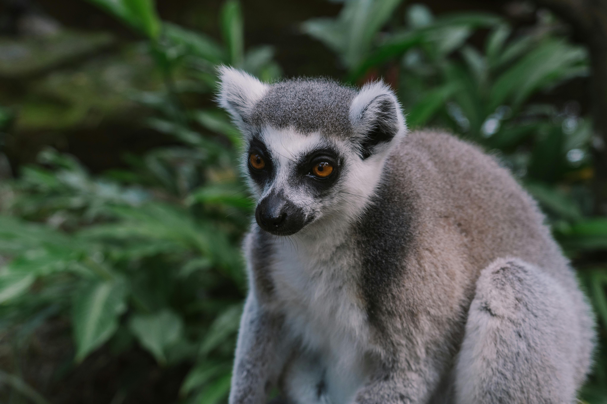
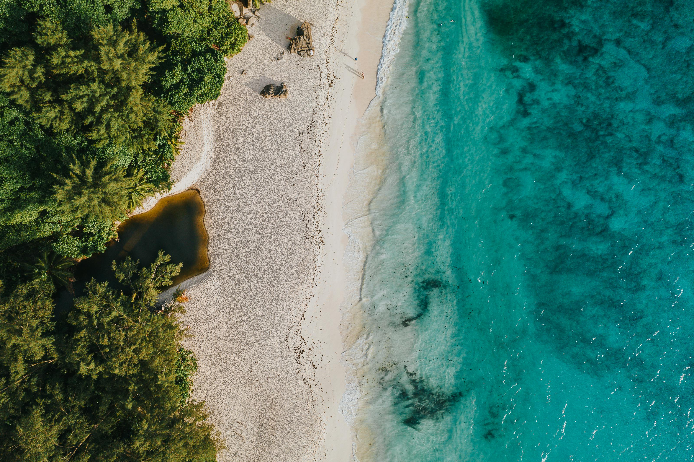

EL ENCANTO INDÓMITO DE ÁFRICA
¿Buscas una aventura que te cambie la vida?
África te espera con su belleza salvaje y su rica diversidad cultural. Desde las vastas llanuras del Serengeti hasta las majestuosas cataratas Victoria, cada rincón del continente ofrece una experiencia única y emocionante. Explorarás paisajes que parecen sacados de un sueño y te maravillarás con la vida silvestre en su hábitat natural.
La calidez y hospitalidad de sus gentes te recibirán con los brazos abiertos, invitándote a descubrir sus tradiciones y costumbres ancestrales. Sumérgete en la música y el baile, prueba la deliciosa gastronomía local y siente el pulso vibrante de la vida africana. Cada encuentro será una oportunidad para conectar con un lugar lleno de alma y espíritu.
África no es solo un destino, es una experiencia que se quedará contigo para siempre. Sus colores, sonidos y aromas se grabarán en tu memoria, y te llevarás contigo un trozo de esta tierra mágica. Al final de tu viaje, entenderás por qué tantos viajeros se enamoran de África y sienten la necesidad de regresar una y otra vez.
Kenya

Kenia, ubicado en el este de África, es un destino imprescindible para aquellos que buscan experiencias paradisíacas. A diferencia de otros destinos, Kenia ofrece una combinación incomparable de vida salvaje, paisajes espectaculares y una rica cultura local. Entre los lugares más destacados se encuentra el Parque Nacional Masai Mara, conocido por su impresionante vida salvaje y la Gran Migración, donde millones de animales cruzan las llanuras en busca de pastos frescos.
Además de su fauna, Kenia cuenta con maravillas naturales como el Parque Nacional de Amboseli, con vistas icónicas del Monte Kilimanjaro, y el Parque Nacional Tsavo, uno de los más grandes de África. Las playas de arena blanca de la costa de Kenia, como Diani Beach y Watamu, son destinos paradisíacos perfectos para relajarse y disfrutar del mar turquesa.
En la región costera, ciudades históricas como Mombasa y Lamu ofrecen una mezcla fascinante de cultura swahili, arquitectura colonial y playas hermosas. Pasear por las calles de Lamu es como retroceder en el tiempo, mientras que sus playas cercanas ofrecen un refugio tranquilo.
En resumen, Kenia combina aventura, naturaleza y cultura de manera única, junto con algunas de las playas más hermosas del mundo. Con su vida salvaje espectacular y paraísos costeros, Kenia promete una experiencia inolvidable para todos los viajeros.
Madagascar
La isla roja de Madagascar ofrece una experiencia única para aquellos que buscan un destino paradisíaco con un toque diferente. Si bien las playas de Nosy Be, un archipiélago al norte, son impresionantes, la isla principal también tiene mucho que ofrecer en términos de atracciones. Además de los encantadores hoteles, como el Masaola Forest Lodge que brinda una experiencia exclusiva para explorar el Parque Nacional de Masaola, Madagascar cuenta con una amplia variedad de lugares fascinantes para visitar a lo largo de la isla.
Dos de los lugares más impresionantes son la espectacular Avenida de los Baobabs y el intrigante Parque Nacional Tsingy, conocido por sus formaciones rocosas únicas. El Parque Nacional Isalo también es una parada obligatoria, ofreciendo la mejor experiencia de safari en el país. Para quienes buscan una experiencia playera diferente a Nosy Be, la isla de Santa María en la costa noreste de la isla es una opción intrigante. Este antiguo refugio de piratas es ideal para avistar ballenas y disfrutar del sol en playas vírgenes y pintorescas.
Madagascar no solo impresiona con sus paisajes y vida salvaje, sino también con su cultura rica y variada. La isla de Santa María, con sus playas vírgenes y la posibilidad de avistar ballenas, añade un encanto especial a cualquier visita. En resumen, Madagascar combina paisajes espectaculares, una rica biodiversidad y playas paradisíacas, creando una experiencia única y memorable para los viajeros.
Seychelles
Entre las joyas del océano Índico para realizar viajes paradisíacos, destacan las exuberantes Seychelles. A diferencia de las Maldivas, estas islas se distinguen por su tamaño considerable y la posibilidad de sumergirse en la cultura local durante la estadía.
Entre las islas más recomendadas se encuentran Mahé, La Digue y Praslin. En Mahé, la capital Victoria y el majestuoso Parque Nacional Morne Seychellois ofrecen una oportunidad única para explorar senderos serpenteantes a través de la densa selva, complementando las impresionantes playas de la isla.
La Digue, famosa por su belleza natural, alberga la aclamada Anse Source D'Argent, considerada una de las mejores playas del mundo. Sin embargo, cada rincón de esta isla ofrece una experiencia playera única y memorable. Además, La Digue es un puerto habitual para algunos de los mejores cruceros por el Oriente Medio, añadiendo un toque de lujo a la experiencia.
Por último, la isla de Praslin no decepciona con su oferta de playas y resorts de ensueño. Pero más allá de su belleza costera, Praslin alberga el impresionante Valle de Mai, un paisaje cultural declarado Patrimonio de la Humanidad por la UNESCO.
En Praslin, los visitantes pueden maravillarse con la belleza única de la naturaleza y la historia de estas islas paradisíacas, disfrutando de una experiencia inolvidable en un entorno verdaderamente idílico.